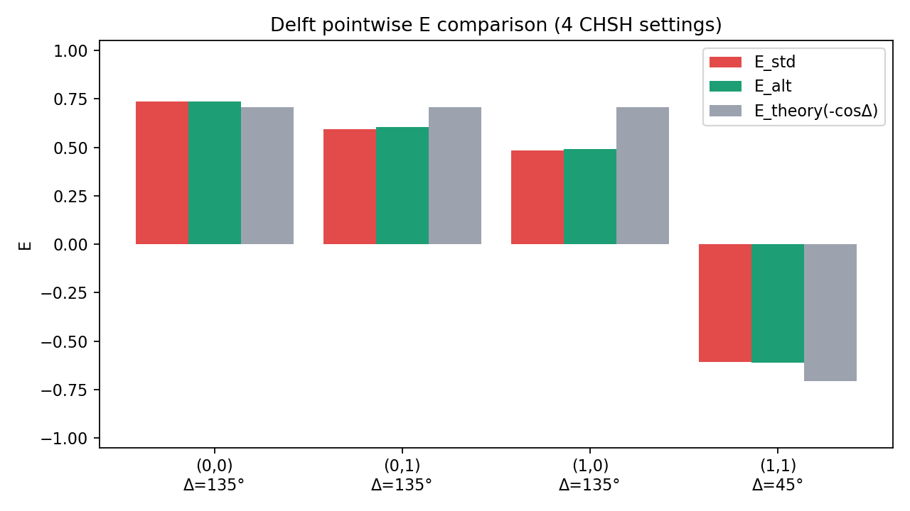
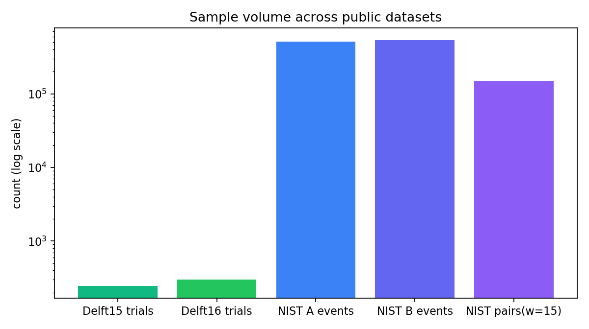

公开数据验证看板
数据源：Delft 2015 + Delft 2016 + NIST completeblind
Delft 2015 S_std
2.422500
Delft 2015 S_alt
2.439807
Delft 2016 S_combined
2.346431
NIST S(w=0 / w=15)
2.336276 / 2.812912
图1：S值对比

图2：Delft角点E值对比

图3：NIST配对窗口稳健性

图4：样本量对比

NIST窗口扫描明细
| window | paired events | S |
|---|---|---|
| 0.0 | 136632 | 2.336276 |
| 1.0 | 137498 | 2.578770 |
| 2.0 | 138353 | 2.680187 |
| 5.0 | 140822 | 2.800230 |
| 10.0 | 144800 | 2.829113 |
| 15.0 | 148696 | 2.812912 |
复现命令
python data/build_public_validation_pack.py
解释边界
- Delft公开数据是4个固定CHSH设置，不是0°-180°连续扫角。
- NIST侧流分析对配对窗口敏感，说明必须提前固定管线定义。
- 本看板强调“公开数据可复现图证”，不是单一叙事论证。